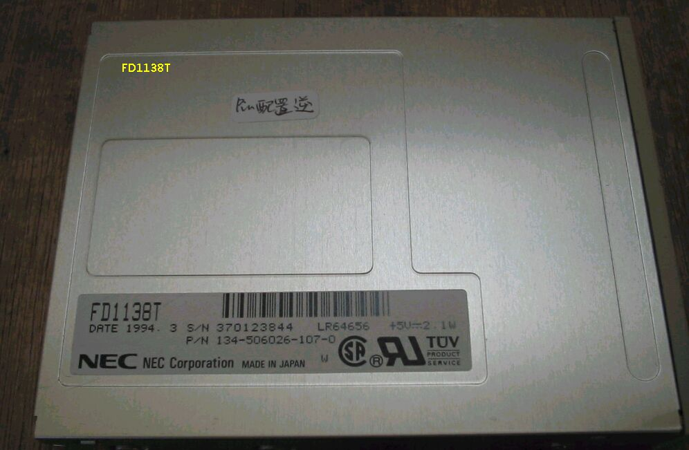
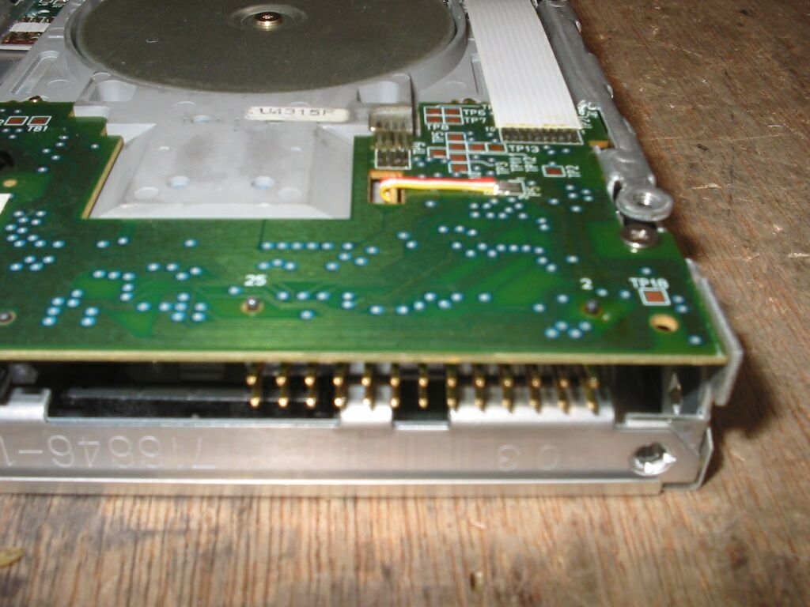

3.5インチFDD NEC FD1138T (2)
FD1138T(2)の写真です。P/Nは普通の1138Tですと134-506027-011-0ですが、これは134-506026-107-0と なっており、pin配列が逆です。 
pin配列がわかるようクローズアップしました。プリント基板上で、普通１と書いてあるところが25、 26のところが2となっており、ケーブルを逆に挿さないといけない。 
98FDDのページに戻る